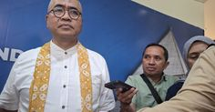
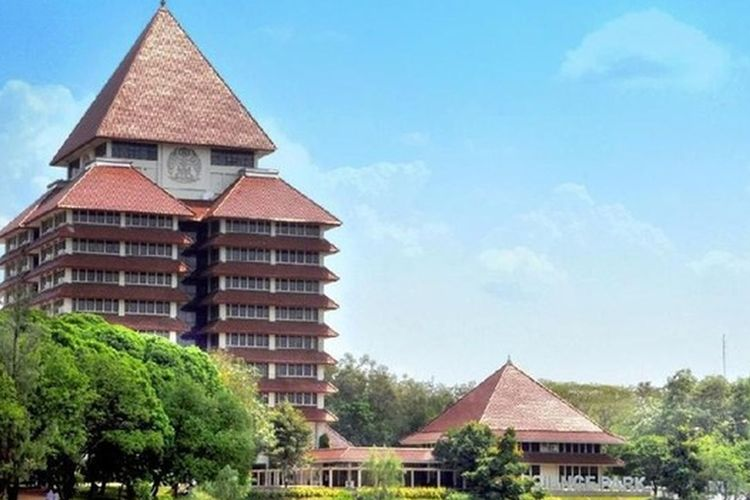

KOMPAS.com - Dewan Guru Besar Universitas Indonesia (UI) akan menyampaikan berbagai macam kajian dari berbagai macam masalah yang ada di Indonesia. Ketua Dewan Guru Besar Eko Prasojo mengatakan, masalah-masalah itu antara lain soal Makan Bergizi Gratis (MBG), Koperasi Merah Putih, dan pendirian Universitas Republik Indonesia (URI).
“Nanti yang emerging yang lain tentu terkait dengan MBG, dengan Kooperasi Barat Putih, dan juga URI misalnya,” kata Eko di Makara Art Center UI, Depok, Jawa Barat, Rabu (12/8/2026).
Sampaikan pokok pikiran sebagai guru bangsa
Eko menjelaskan, tujuan memberikan kajian ini antara lain menyampaikan pokok pikiran sebagai guru bangsa dan berupaya menjamin efektivitas pelaksanaan kebijakan pemerintah. “Tujuan kita sebenarnya sebagai guru bangsa adalah menyampaikan hal-hal yang menjamin efektivitas berbagai kebijakan pemerintah,” ujarnya.
Beberapa waktu lalu, kata Eko, Dewan Guru Besar juga sudah mengirim kajian mengenai kebijakan Perdamaian Palestina atau Board of Peace (BoP) dan hasilnya sudah sampaikan ke Menteri Pertahanan. Kemudian yang kedua, perjanjian perdagangan timbal balik antara Indonesia dengan Amerika Serikat (AS) yang disampaikan kepada Menteri Koordinator Perekonomian.
"Kami sekarang sedang fokus di Komite 3 DGB untuk mengkaji masalah-masalah yang sedang berkembang, yang terkini, yang banyak dibahas dan menjadi isu publik," ungkapnya.

Harus berperan dalam kebijakan negara agar menjadi lebih baik
Eko menegaskan, guru besar harus berperan dalam kebijakan negara agar menjadi lebih baik dan lebih efektif di masa depan. “Bagaimana kita berperan, berkontribusi untuk kebijakan yang lebih baik bagi pemerintah,” ucapnya.
Termasuk mungkin kelak memberikan masukan terhadap berbagai program yang telah dilakukan oleh pemerintah. Agar bisa menciptakan efektivitas dari program itu,” tandas Eko.